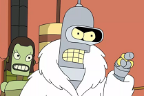

Midjourney: under the hood
Learn the tool.
Go back <<<
To drive a car you have to learn some basics about cars:
- A car has weels,
- and an engine inside,
- and it converts gasoline into miles, ...
The same story with Midjourney: some basic understanding of what it is will help you to get better results.
Midjourney is an association of 2 ML models:
A powerful GPT-3 NLP model

Deep Convolutional Generative Adversarial Network
GPT-3 (Generative Pre-trained Transformer)

1 - GPT-3 inside

2 - converting word to vector

3 - Transformer "Magic" inside
Facts about GPT-3
- ~100M neurons (~0.001 human brain size)
- 355 GPU-years to train, at ~$4.6M cost
- Savant syndrome
GPT-3-to-human dialogs
show a huge leap forward from where we were a decade ago:

- GPT-3: The hierarchy of complexity is: atoms, molecules, organisms, humans, AI, Super-AI, and God.
- Human: Is something over God?
- GPT-3: No.
- Human: And where is God?
- GPT-3: God is all there is, including the simulation we are living in.
| Which is heavier, a mouse or a toaster? | |
| A toaster is heavier than a mouse. |  |
| Which is heavier, a toaster or a pencil? | |
| The pencil is heavier than the toaster. |
| Who was the President of the USA in 1801? | |
| Thomas Jefferson was the President of the United States in 1801. |
| Who was the President of the USA in 1650? | |
| Richard Bennet was President of the United States in 1650. |
| How many rainbows does it take to jump from Hawaii to 17? | |
| It takes two rainbows to jump from Hawaii to 17 |
- Midjourney does extremely well while combining objects or concepts,
- because of the way it's built...
Midjourney prompt: half cat half dinosaur
But it often fails to portray some action:
homer simpson strangles a raptor
guinea pig eating a man
frightened guinea pig
Who's frightened now?
Neural networks aren't too attentive to detail,
they rather convey the concept...
This's supposed to be a dog with a carrot.
Especially they don't do well with hands
Finally: Midjourney tips & tricks
We're moving to the next section: mastering Midjourney prompt >>>